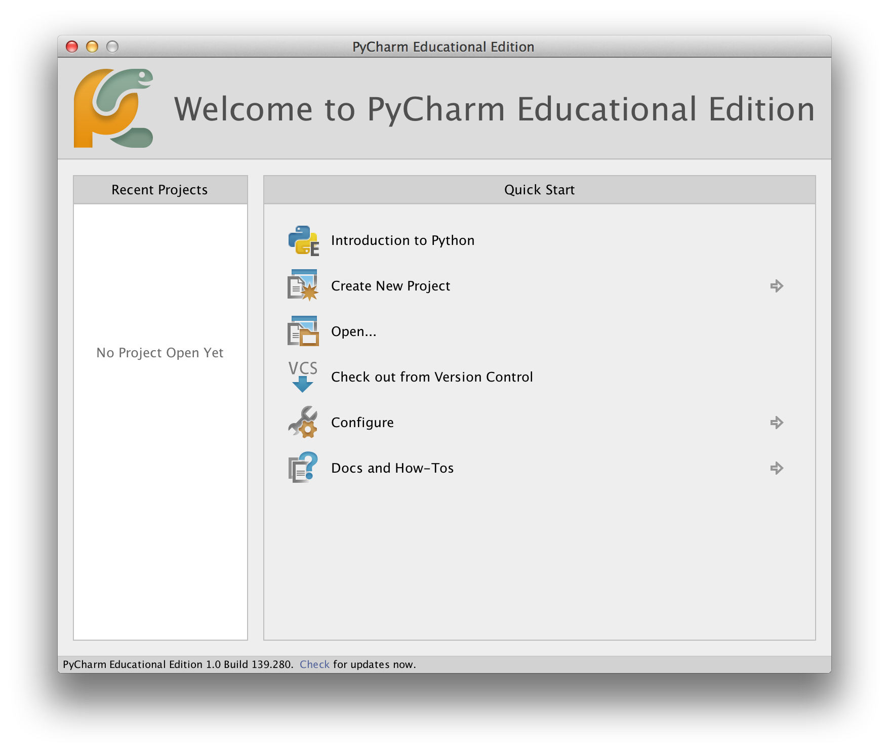
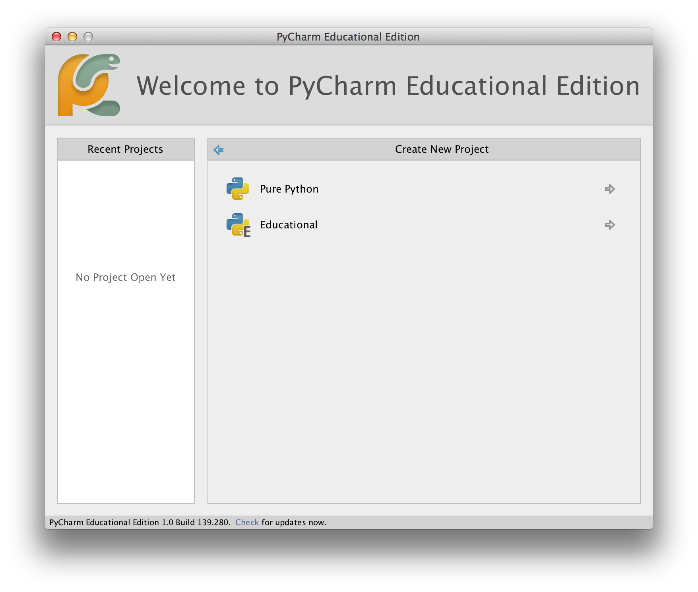
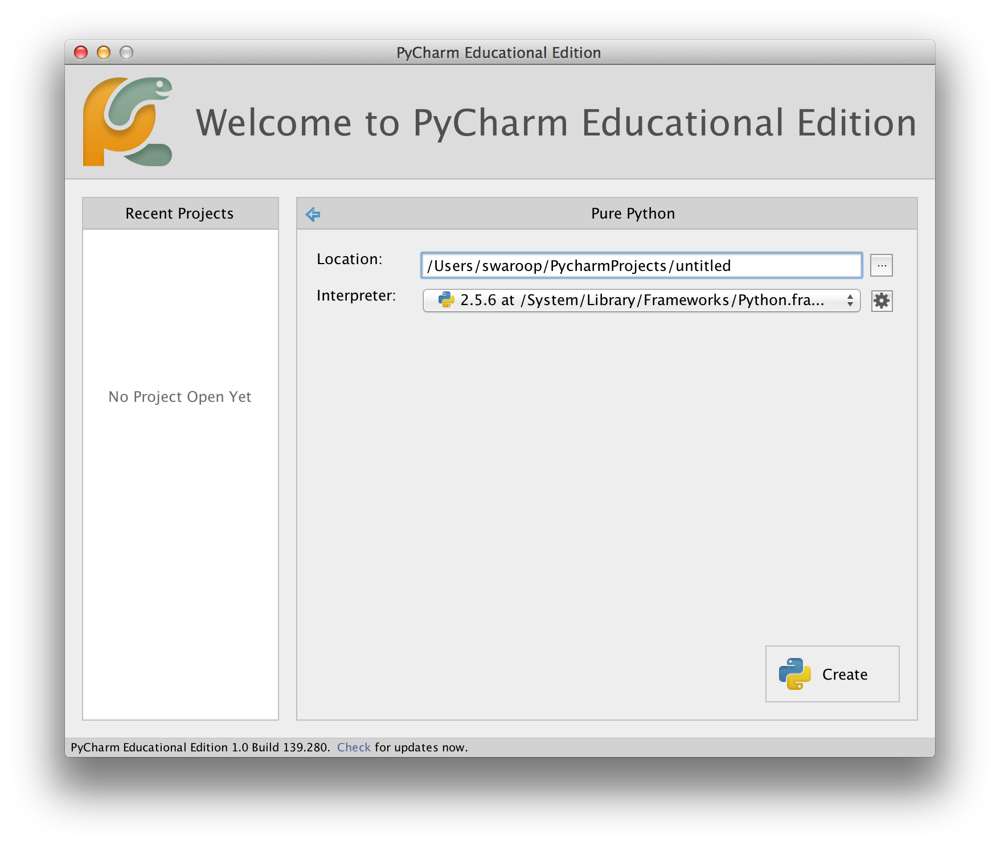
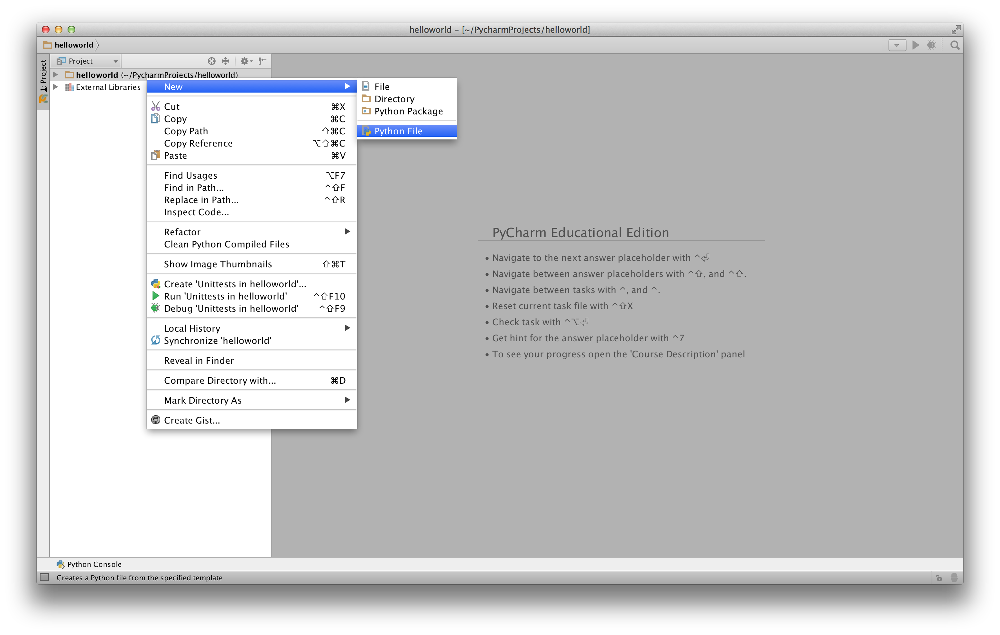
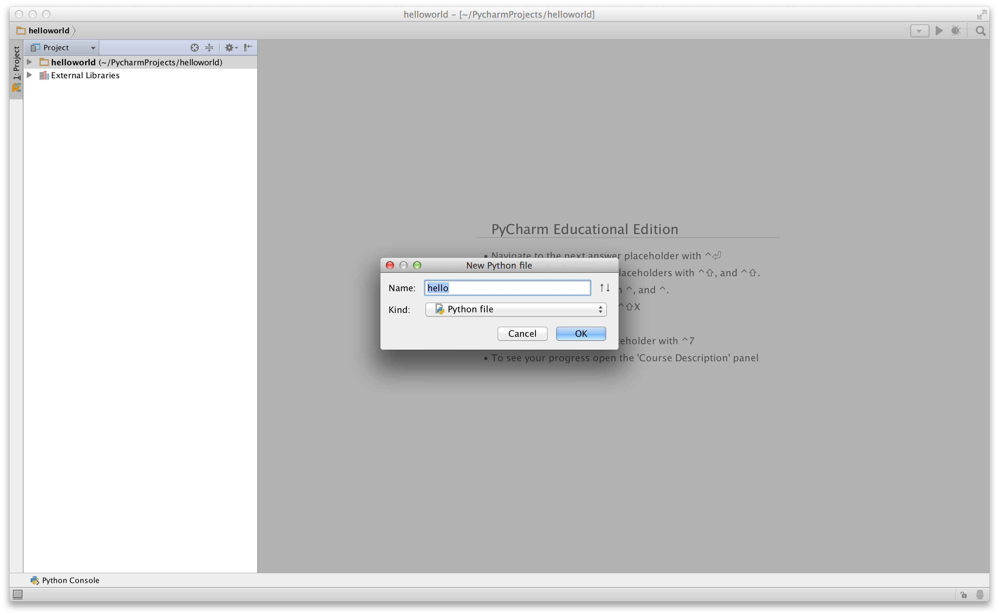
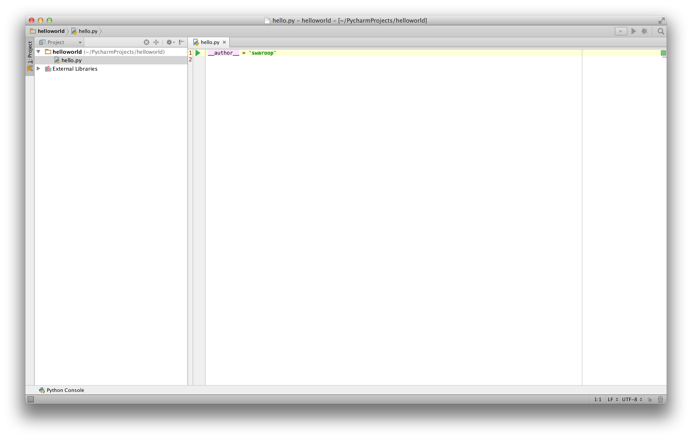
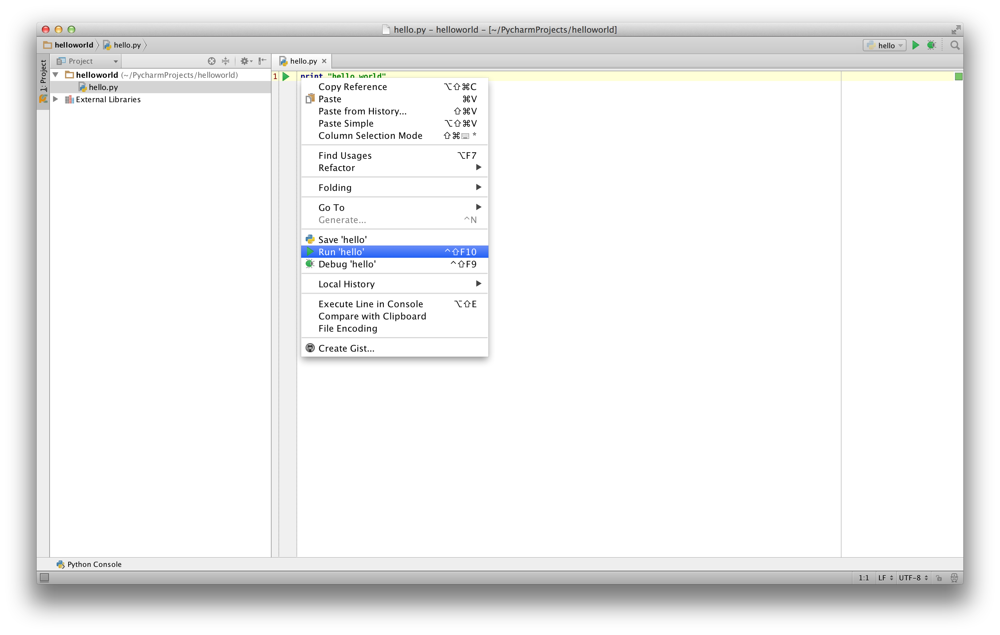
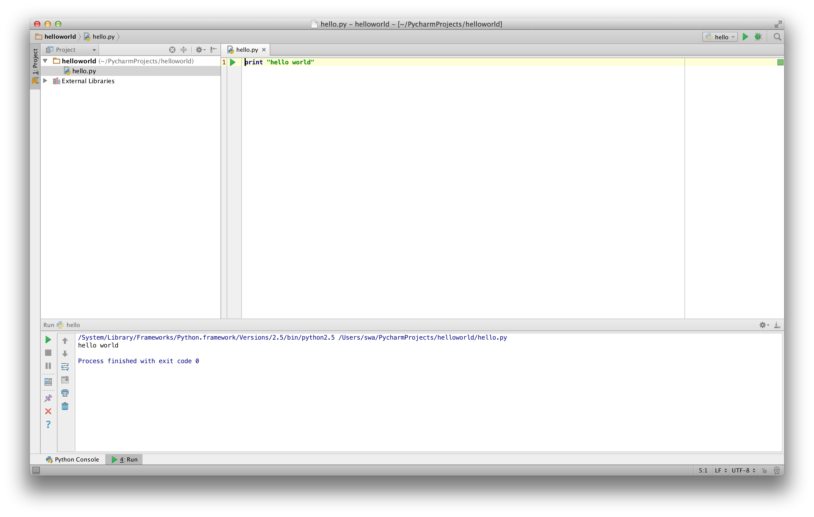
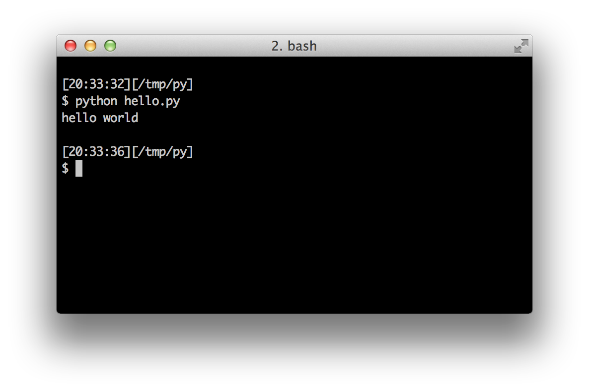

第一步
现在我们来看看如何在 Python 中运行传统的"Hello World"程序。这将教你如何编写、保存和运行 Python 程序。
使用 Python 运行程序有两种方式——使用交互式解释器提示符或使用源文件。我们现在来看看如何使用这两种方法。
使用解释器提示符
打开你操作系统中的终端（如前面安装章节所述），然后输入 python3 并按 [回车] 键来打开 Python 提示符。
启动 Python 后，你应该会看到 >>>，在这里你可以开始输入内容。这被称为 Python 解释器提示符。
在 Python 解释器提示符中，输入：
print("Hello World")
然后按 [回车] 键。你应该会在屏幕上看到 Hello World 字样。
以下是你应该看到的示例，使用的是 Mac OS X 计算机。Python 软件的详细信息会因你的计算机而异，但从提示符开始的部分（即从 >>> 开始）在任何操作系统上都应该是一样的。
$ python3
Python 3.6.0 (default, Jan 12 2017, 11:26:36)
[GCC 4.2.1 Compatible Apple LLVM 8.0.0 (clang-800.0.38)] on darwin
Type "help", "copyright", "credits" or "license" for more information.
>>> print("Hello World")
Hello World
注意 Python 会立即给你输出结果！你刚才输入的是一个 Python 语句。我们使用 print 来（不出所料地）打印你提供给它的任何值。在这里，我们提供了文本 Hello World，它立即被打印到了屏幕上。
如何退出解释器提示符
如果你使用的是 GNU/Linux 或 OS X 的 shell，可以按 [ctrl + d] 或输入 exit()（注意：记得包含括号 ()）然后按 [回车] 键来退出解释器提示符。
如果你使用的是 Windows 命令提示符，按 [ctrl + z] 然后按 [回车] 键。
选择编辑器
我们不能每次想运行程序时都在解释器提示符中输入，所以我们需要将程序保存在文件中，这样可以运行任意次数。
要创建 Python 源文件，我们需要一个可以输入和保存的编辑器软件。一个好的程序员编辑器会让编写源文件变得更加轻松。因此，选择编辑器至关重要。你需要像挑选要买的汽车一样来选择编辑器。一个好的编辑器能帮助你轻松编写 Python 程序，让你的旅途更加舒适，并帮助你更快、更安全地到达目的地（实现你的目标）。
一个最基本的要求是语法高亮——将 Python 程序的不同部分用不同颜色显示，这样你就能看到你的程序并可视化它的运行。
如果你不知道从哪里开始，我推荐使用 PyCharm Educational Edition，它可以在 Windows、Mac OS X 和 GNU/Linux 上使用。详情见下一节。
如果你使用 Windows，不要使用记事本——这是一个糟糕的选择，因为它没有语法高亮功能，更重要的是它不支持文本缩进，而缩进在我们的情况下非常重要（我们后面会看到）。好的编辑器会自动处理缩进。
如果你是一名有经验的程序员，那么你一定已经在使用 Vim 或 Emacs 了。毫无疑问，这是两个最强大的编辑器，使用它们编写 Python 程序会给你带来很大好处。我个人在大多数程序中都使用这两个编辑器，甚至还写过一本关于 Vim 的完整书。
如果你愿意花时间学习 Vim 或 Emacs，我强烈推荐你学习使用其中之一，因为从长远来看它会非常有用。不过，正如我之前提到的，初学者可以从 PyCharm 开始，把学习精力集中在 Python 上，而不是编辑器上。
再次强调，请选择一个合适的编辑器——它可以让编写 Python 程序变得更加有趣和轻松。
如果你对这个话题的详细讨论感兴趣，请查看 Finding the Perfect Python Code Editor。
PyCharm
PyCharm Educational Edition 是一个免费的编辑器，你可以用它来编写 Python 程序。
打开 PyCharm 时，你会看到如下界面，点击 Create New Project：

选择 Pure Python：

将 untitled 改为 helloworld 作为项目位置，你应该会看到类似以下的详细信息：

点击 Create 按钮。
在侧边栏中右键点击 helloworld，选择 New -> Python File：

New -> Python File">你会被要求输入文件名，输入 hello：

现在你可以看到一个文件已经为你打开了：

删除已有的行，然后输入以下内容：
print("hello world")
现在右键点击你输入的内容（不需要选中文本），然后点击 Run 'hello'。

你现在应该能看到程序的输出（打印的内容）：

呼！启动的步骤确实不少，但从现在开始，每次我们要求你创建新文件时，记住只需右键点击左侧的 helloworld -> New -> Python File，然后按照上面展示的相同步骤输入和运行即可。
你可以在 PyCharm Quickstart 页面找到更多关于 PyCharm 的信息。
Vim
Emacs
- 安装 Emacs 24+。
- Mac OS X 用户应从 http://emacsformacosx.com 获取 Emacs
- Windows 用户应从 http://ftp.gnu.org/gnu/emacs/windows/ 获取 Emacs
- GNU/Linux 用户应从其发行版的软件仓库获取 Emacs，例如 Debian 和 Ubuntu 用户可以安装
emacs24包
- 安装 ELPY
使用源文件
现在让我们回到编程。有一个传统：每当你学习一门新的编程语言时，你编写和运行的第一个程序就是"Hello World"程序——它所做的就是在运行时输出"Hello World"。正如 Simon Cozens1 所说，这是"向编程之神献上的传统咒语，帮助你更好地学习这门语言。"
启动你选择的编辑器，输入以下程序并将其保存为 hello.py。
如果你使用 PyCharm，我们已经讨论过如何从源文件运行。
对于其他编辑器，打开一个新文件 hello.py 并输入：
print("hello world")
你应该把文件保存在哪里？保存在你知道位置的任何文件夹中。如果你不理解这是什么意思，创建一个新文件夹，并用该位置来保存和运行你所有的 Python 程序：
- Mac OS X 上：
/tmp/py - GNU/Linux 上：
/tmp/py - Windows 上：
C:\py
要创建上述文件夹（针对你使用的操作系统），在终端中使用 mkdir 命令，例如 mkdir /tmp/py。
重要：始终确保你给文件加上 .py 扩展名，例如 foo.py。
要运行你的 Python 程序：
- 打开一个终端窗口（参见前面的安装章节了解如何操作）
- 切换目录到你保存文件的位置，例如
cd /tmp/py - 输入命令
python hello.py来运行程序。输出如下所示。
$ python hello.py
hello world

如果你得到了如上所示的输出，恭喜！——你已经成功运行了你的第一个 Python 程序。你已经成功跨越了学习编程最困难的部分——启动你的第一个程序！
如果你遇到了错误，请完全按照上面的程序重新输入并再次运行。注意 Python 是区分大小写的，即 print 和 Print 是不一样的——注意前者是小写的 p，后者是大写的 P。此外，确保每行第一个字符之前没有空格或制表符——我们稍后会看到为什么这很重要。
工作原理
Python 程序由语句组成。在我们的第一个程序中，只有一个语句。在这个语句中，我们调用了 print 语句，并提供了文本"hello world"。
获取帮助
如果你需要快速了解 Python 中任何函数或语句的信息，可以使用内置的 help 功能。这在使用解释器提示符时特别有用。例如，运行 help('len')——这会显示 len 函数的帮助信息，该函数用于计算项目的数量。
提示：按 q 退出帮助。
同样，你可以获取 Python 中几乎任何东西的信息。使用 help() 来了解更多关于 help 本身的用法！
如果你需要获取像 return 这样的运算符的帮助，你需要将其放在引号中，如 help('return')，这样 Python 就不会对你想要做什么感到困惑。
总结
你现在应该能够轻松地编写、保存和运行 Python 程序了。
既然你已经是一名 Python 用户了，让我们来学习更多 Python 的概念吧。
1. 《Beginning Perl》一书的作者 ↩